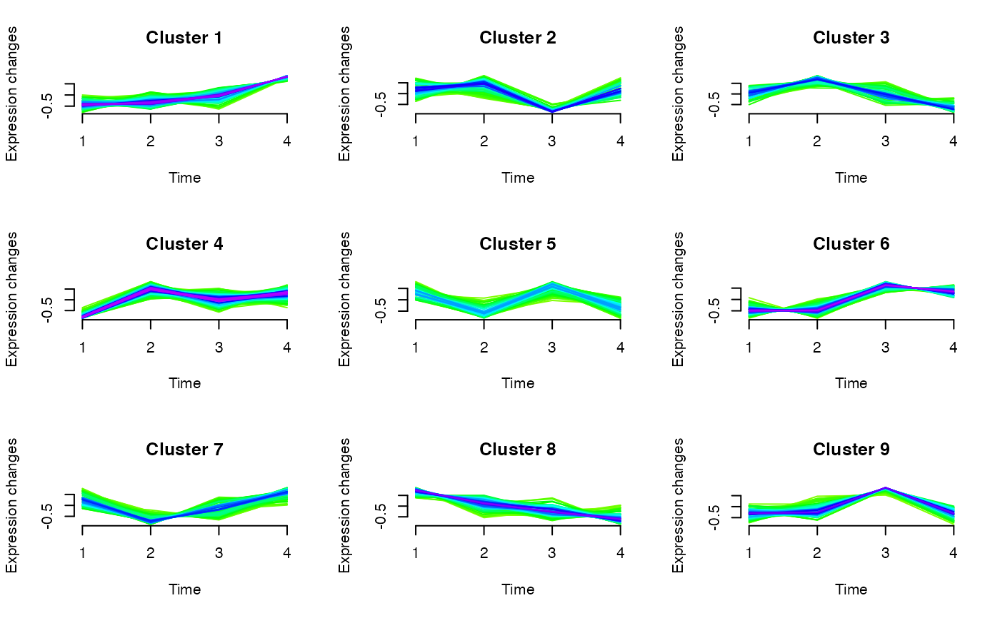

A function to explore a dataset and cluster its rows.
Source:R/omics_array.R
clustExploration-omics_array-method.RdBased on soft clustering performed by the Mfuzz package.
Value
A data.frame of nrows(omicsarray) observations of 3 variables (name, cluster, maj.vote.index).
Examples
library(Patterns)
if(require(CascadeData)){
data(micro_S, package="CascadeData")
D<-Patterns::as.omics_array(micro_S[1:100,],1:4,6)
a<-clustExploration(D)
a
}
#>
#> Attaching package: ‘generics’
#> The following objects are masked from ‘package:igraph’:
#>
#> components, union
#> The following objects are masked from ‘package:base’:
#>
#> as.difftime, as.factor, as.ordered, intersect, is.element, setdiff,
#> setequal, union
#>
#> Attaching package: ‘BiocGenerics’
#> The following objects are masked from ‘package:igraph’:
#>
#> normalize, path
#> The following object is masked from ‘package:DynDoc’:
#>
#> path
#> The following objects are masked from ‘package:stats’:
#>
#> IQR, mad, sd, var, xtabs
#> The following objects are masked from ‘package:base’:
#>
#> Filter, Find, Map, Position, Reduce, anyDuplicated, aperm, append,
#> as.data.frame, basename, cbind, colnames, dirname, do.call,
#> duplicated, eval, evalq, get, grep, grepl, is.unsorted, lapply,
#> mapply, match, mget, order, paste, pmax, pmax.int, pmin, pmin.int,
#> rank, rbind, rownames, sapply, saveRDS, table, tapply, unique,
#> unsplit, which.max, which.min
#> Welcome to Bioconductor
#>
#> Vignettes contain introductory material; view with
#> 'browseVignettes()'. To cite Bioconductor, see
#> 'citation("Biobase")', and for packages 'citation("pkgname")'.
#>
#> Attaching package: ‘e1071’
#> The following object is masked from ‘package:generics’:
#>
#> interpolate

#> name cluster maj.vote.index
#> 1 1007_s_at 6 2
#> 2 1053_at 4 3
#> 3 117_at 4 3
#> 4 121_at 7 2
#> 5 1255_g_at 4 3
#> 6 1294_at 3 3
#> 7 1316_at 2 2
#> 8 1320_at 1 2
#> 9 1405_i_at 7 2
#> 10 1431_at 6 2
#> 11 1438_at 5 2
#> 12 1487_at 8 3
#> 13 1494_f_at 2 3
#> 14 1598_g_at 6 2
#> 15 160020_at 6 3
#> 16 1729_at 1 1
#> 17 1773_at 2 2
#> 18 177_at 6 2
#> 19 179_at 6 2
#> 20 1861_at 5 2
#> 21 200000_s_at 8 2
#> 22 200001_at 2 2
#> 23 200002_at 4 2
#> 24 200003_s_at 5 2
#> 25 200004_at 1 2
#> 26 200005_at 8 2
#> 27 200006_at 8 4
#> 28 200007_at 7 3
#> 29 200008_s_at 1 3
#> 30 200009_at 9 4
#> 31 200010_at 3 3
#> 32 200011_s_at 1 2
#> 33 200012_x_at 6 2
#> 34 200013_at 1 2
#> 35 200014_s_at 1 2
#> 36 200015_s_at 5 3
#> 37 200016_x_at 2 4
#> 38 200017_at 6 3
#> 39 200018_at 7 3
#> 40 200019_s_at 5 3
#> 41 200020_at 7 2
#> 42 200021_at 2 2
#> 43 200022_at 4 3
#> 44 200023_s_at 5 3
#> 45 200024_at 4 2
#> 46 200025_s_at 3 1
#> 47 200026_at 1 1
#> 48 200027_at 1 3
#> 49 200028_s_at 2 3
#> 50 200029_at 4 2
#> 51 200030_s_at 7 2
#> 52 200031_s_at 3 2
#> 53 200032_s_at 1 2
#> 54 200033_at 3 3
#> 55 200034_s_at 4 2
#> 56 200035_at 2 2
#> 57 200036_s_at 3 1
#> 58 200037_s_at 2 3
#> 59 200038_s_at 4 2
#> 60 200039_s_at 8 2
#> 61 200040_at 1 2
#> 62 200041_s_at 8 3
#> 63 200042_at 8 3
#> 64 200043_at 8 2
#> 65 200044_at 1 2
#> 66 200045_at 1 3
#> 67 200046_at 8 3
#> 68 200047_s_at 8 2
#> 69 200048_s_at 9 2
#> 70 200049_at 7 3
#> 71 200050_at 1 2
#> 72 200051_at 7 2
#> 73 200052_s_at 1 2
#> 74 200053_at 5 2
#> 75 200054_at 1 4
#> 76 200055_at 8 2
#> 77 200056_s_at 1 2
#> 78 200057_s_at 9 2
#> 79 200058_s_at 1 2
#> 80 200059_s_at 1 2
#> 81 200060_s_at 1 2
#> 82 200061_s_at 4 2
#> 83 200062_s_at 6 3
#> 84 200063_s_at 8 6
#> 85 200064_at 8 4
#> 86 200065_s_at 1 2
#> 87 200066_at 1 2
#> 88 200067_x_at 5 4
#> 89 200068_s_at 8 3
#> 90 200069_at 5 2
#> 91 200070_at 3 3
#> 92 200071_at 1 2
#> 93 200072_s_at 3 2
#> 94 200073_s_at 1 2
#> 95 200074_s_at 2 3
#> 96 200075_s_at 1 3
#> 97 200076_s_at 2 2
#> 98 200077_s_at 5 3
#> 99 200078_s_at 1 3
#> 100 200079_s_at 8 4